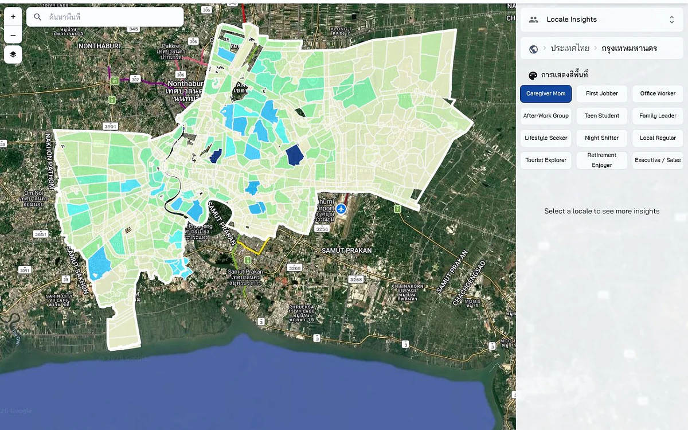

CityMETER · Location
Locale Insights: บริบทย่าน
เริ่มรู้จักย่านจากข้อมูลบริบทที่รวมไว้ เพื่อเตรียมการลงพื้นที่ วางแผนบริการ และพูดคุยกับชุมชน
เปิดข้อมูลบนแผนที่ ↗
ใช้โปรไฟล์ย่านตั้งคำถามให้ดีขึ้น
Locale Insights ช่วยให้มีภาพตั้งต้นก่อนเข้าไปทำงานในพื้นที่ นำประเด็นที่เห็นไปเทียบกับข้อมูลราชการ บันทึกท้องถิ่น และสิ่งที่พบจริง แล้วปรับแผนจากหลักฐานเหล่านั้น
บริบทนี้ไม่แทนประชากรทางการ พฤติกรรมจริง เกณฑ์สิทธิ หรือความเสี่ยง ต้องเชื่อม locale_id กับขอบเขตที่ตรวจแล้วก่อนรวมยอด
ลองเริ่มจากสองคำถามนี้
- มีประเด็นใดของย่านที่ควรไปเรียนรู้จากคนในพื้นที่?
- ข้อมูลทางการหรือบันทึกท้องถิ่นใดควรใช้ประกอบ?
ดูพื้นที่ที่คุณสนใจต่อ
ใช้เป็นโจทย์ลงพื้นที่และพูดคุย ไม่ใช้เป็นคำตัดสินแทนชุมชน
อ่านต่อจากต้นทาง
แหล่งอ้างอิง ช่วงเวลา และขอบเขตข้อมูล
ข้อมูลที่รวบรวมหรือคำนวณต่อ
- ผู้เผยแพร่ข้อมูล
- CityMETER derived / LLM-assisted contextual layer
- ที่มา
- CityMETER สังเคราะห์บริบทพื้นที่จากหลายสัญญาณ รวมถึงการช่วยสรุปด้วยแบบจำลองภาษา ใช้ประกอบการตั้งคำถามและตรวจพื้นที่จริง
- ช่วงเวลาของข้อมูล
- ยังไม่ยืนยันช่วงเวลา — ตรวจวันอ้างอิงในหน้าข้อมูลก่อนใช้
- พื้นที่ครอบคลุม
- หน้าตั้งต้นอยู่ในกรุงเทพฯ; ภาพรวมความครอบคลุมทั้งหมดของ locale ยังไม่เผยแพร่
- ระดับรายละเอียด
- locale เป็นหน่วยย่อยสุดที่เลือกได้; geometry และ crosswalk ไปขอบเขตบริการยังไม่ยืนยัน
เมื่อจะนำข้อมูลไปเปรียบเทียบหรืออ้างอิง
ใช้เป็นบริบทตั้งต้นสำหรับวางแผนบริการ ลงพื้นที่ พูดคุยกับชุมชน และจัดลำดับงาน ต้องเชื่อม locale_id กับขอบเขตปกครองหรือบริการที่ตรวจแล้วก่อนรวมยอด ไม่ใช้แทนประชากรทางการ พฤติกรรมจริง เกณฑ์สิทธิ หรือการประเมินความเสี่ยง
ร่วมพัฒนาโดย
 อิ๋งSoftware development
อิ๋งSoftware development

สแกนเพื่อเปิดข้อมูลนี้ใน CityMETERเปิดข้อมูลบนแผนที่ (เปิดแท็บใหม่)
แชร์สรุปนี้
ส่งให้คนที่กำลังศึกษาเรื่องนี้ด้วยกัน